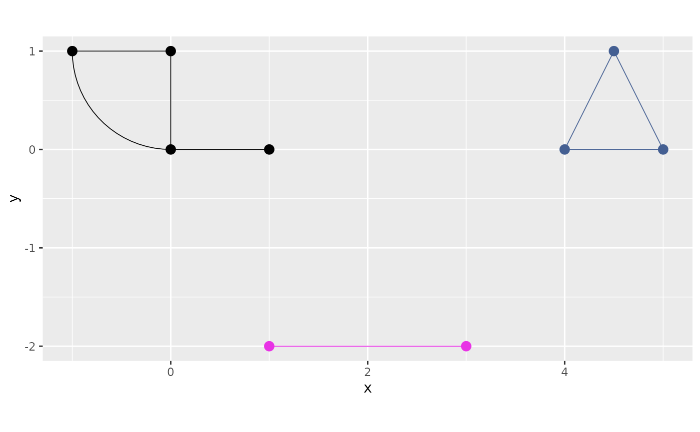
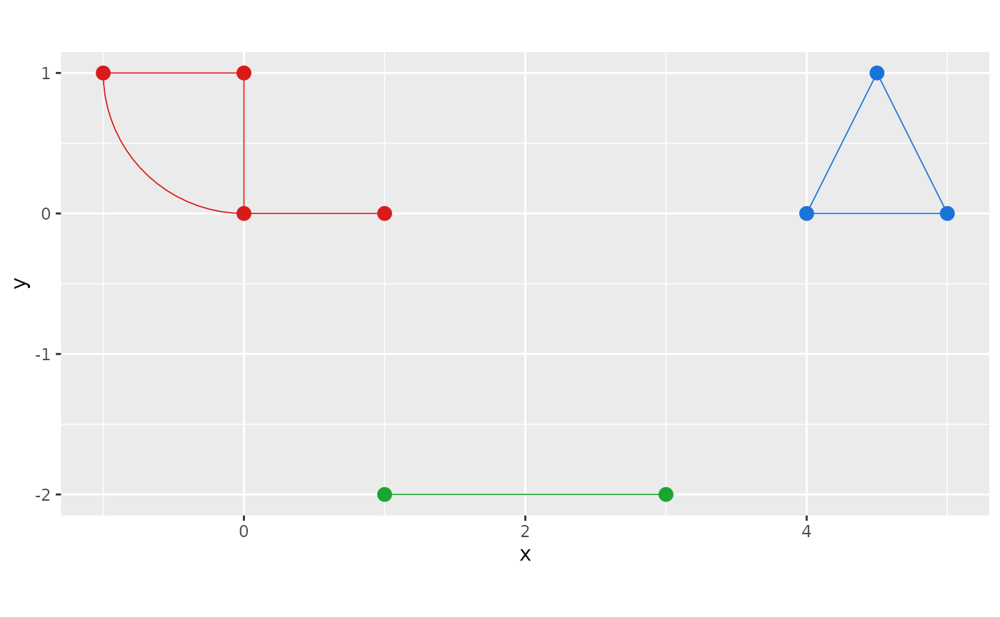
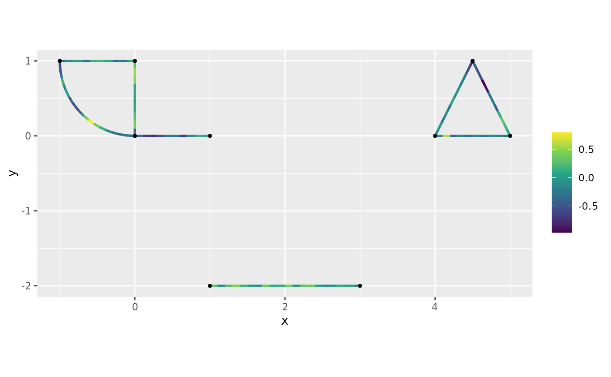
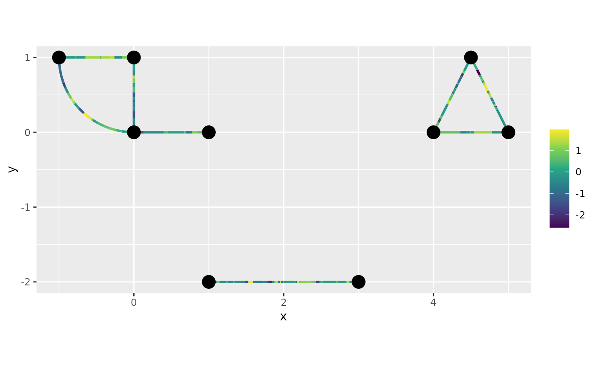
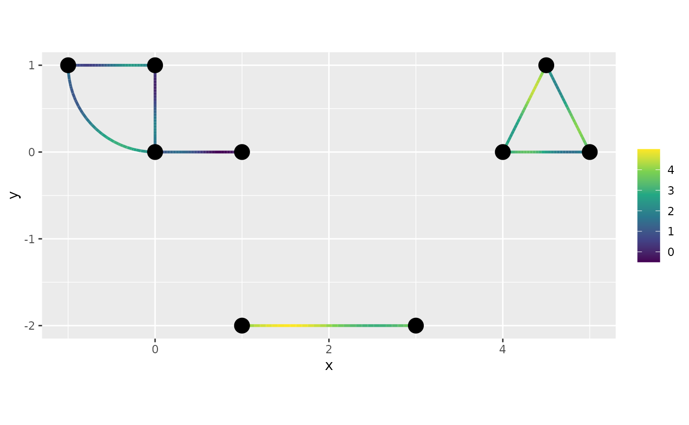

Working with disconnected metric graphs
David Bolin, Alexandre B. Simas, and Jonas Wallin
Created: 2026-05-14. Last modified: 2026-05-14.
Source:vignettes/graph_components.Rmd
graph_components.RmdIntroduction
A metric graph need not be connected: real-world networks (street
segments, isolated stretches of river, fragmented sensor coverage, etc.)
often consist of several disjoint components. The
metric_graph class supports this case directly — pass
check_connected = FALSE to skip the connectedness warning
at construction time, and then use the same methods
(add_observations, compute_geodist,
compute_resdist, spde_precision,
graph_lme, sample_spde, …) as on a connected
graph. Distance methods produce Inf for vertex pairs in
different components and SPDE precision matrices come out block-diagonal
by construction, so no special bookkeeping is required.
This vignette walks through the disconnected workflow: constructing the graph, inspecting and routing across components, computing distances and SPDE models, and per-component visualisation.
For the basics of constructing and working with a single connected metric graph, see Working with metric graphs.
Note. A previous release shipped a separate
graph_componentsclass for this purpose. It is deprecated and now emits a warning at construction; the functionality demonstrated below replaces it.
Constructing a disconnected metric graph
We build a small graph with three disjoint components:
- Component A is a small “L”-shape with a curved arc.
- Component B is a triangle.
- Component C is a single straight edge.
# Component A: L-shape with a curved arc
edgeA1 <- rbind(c(0, 0), c(1, 0))
edgeA2 <- rbind(c(0, 0), c(0, 1))
edgeA3 <- rbind(c(0, 1), c(-1, 1))
theta <- seq(from = pi, to = 3 * pi / 2, length.out = 20)
edgeA4 <- cbind(sin(theta), 1 + cos(theta))
# Component B: a triangle, translated to the right
edgeB1 <- rbind(c(4, 0), c(5, 0))
edgeB2 <- rbind(c(5, 0), c(4.5, 1))
edgeB3 <- rbind(c(4.5, 1), c(4, 0))
# Component C: a single straight edge, placed below
edgeC1 <- rbind(c(1, -2), c(3, -2))
edges <- list(edgeA1, edgeA2, edgeA3, edgeA4,
edgeB1, edgeB2, edgeB3,
edgeC1)Setting check_connected = FALSE suppresses the “graph is
disconnected” message:
graph <- metric_graph$new(edges = edges, check_connected = FALSE)
graph$nE## [1] 8
graph$nV## [1] 9The graph behaves exactly like any other metric_graph.
Observations, meshes, and SPDE models all work without further setup;
the rest of this vignette focuses on the bits that are specific to the
disconnected case.
Inspecting the components
get_components() returns the connected components as a
list of metric_graph objects. Components are sorted by
total edge length, descending:
comps <- graph$get_components()
length(comps)## [1] 3
sapply(comps, function(g) g$nE)## [1] 4 3 1
sapply(comps, function(g) sum(as.numeric(g$edge_lengths)))## [1] 4.570349 3.236068 2.000000The largest component is just comps[[1]]:
g_largest <- comps[[1]]
g_largest$nE## [1] 4For a connected graph, get_components() simply returns
list(self), so the same call works uniformly.
Determining the component of a spatial point
which_component() snaps each spatial point to the
nearest network location and returns the component index:
XY <- rbind(c(0.5, 0.0), # near component A
c(4.5, 0.5), # inside the triangle (component B)
c(2.0, -2.0)) # on the bottom edge (component C)
graph$which_component(XY)## [1] 1 2 3This is the same routing rule that add_observations()
uses internally for spatial input.
Plotting
plot() accepts a components argument that
draws every component in a different colour:
graph$plot(components = TRUE)
You can also pass an n × 3 matrix of RGB values (one row
per component) for explicit colour control:
cols <- rbind(c(0.85, 0.10, 0.10),
c(0.10, 0.45, 0.85),
c(0.10, 0.65, 0.20))
graph$plot(components = cols)
Adding observations
Observations are added with the usual add_observations()
method. For data_coords = "spatial" each point is snapped
to the nearest edge automatically:
n_obs <- 30
df_spatial <- data.frame(
coord_x = c(runif(n_obs, -1, 1),
runif(n_obs, 4, 5),
runif(n_obs, 1, 3)),
coord_y = c(runif(n_obs, 0, 1),
runif(n_obs, 0, 1),
rep(-2, n_obs)),
y = rnorm(3 * n_obs)
)
graph$add_observations(data = df_spatial, data_coords = "spatial",
verbose = 0, tolerance = 3)get_data() returns the observations exactly as for a
connected graph. Pair with which_component() if you need a
per-component breakdown:
##
## 1 2 3
## 30 30 30For data_coords = "PtE", the usual
(edge_number, distance_on_edge) columns are used; edge
numbering is global across the whole graph.
Distances on disconnected graphs
compute_geodist() and compute_resdist() are
aware that vertices in different components have infinite distance and
produce Inf on the cross-component blocks (with finite
values within each component):
graph$compute_resdist(full = TRUE)
R <- graph$res_dist[[".complete"]]
# Cross-component pairs are Inf
sum(is.infinite(R)) > 0## [1] TRUE## [1] TRUEThis means isotropic models such as
graph_lme(model = "isoExp") produce exactly zero
correlation between components without any special handling.
SPDE models
The SPDE precision matrix spde_precision() builds a
per-edge precision matrix and assembles it via vertex indices in
graph$E. Because edges in different components touch
disjoint vertex sets, the resulting matrix is block-diagonal
automatically:
Q <- spde_precision(kappa = 2, tau = 1, alpha = 1, graph = graph)
dim(Q)## [1] 9 9
# Verify block structure: vertices of component k only connect within k
membership <- igraph::components(
igraph::make_graph(c(t(graph$E)), directed = FALSE), mode = "weak"
)$membership
cross <- outer(membership, membership, FUN = "!=")
max(abs(as.matrix(Q)[cross]))## [1] 0Fitting a Whittle–Matérn model is no different from the connected case:
graph$clear_observations()
df_fit <- data.frame(
coord_x = c(runif(50, -1, 1), runif(50, 4, 5), runif(50, 1, 3)),
coord_y = c(runif(50, 0, 1), runif(50, 0, 1), rep(-2, 50)),
y = rnorm(150)
)
graph$add_observations(data = df_fit, data_coords = "spatial",
verbose = 0, tolerance = 3)
fit <- graph_lme(y ~ 1, graph = graph, model = "WM1")
as.numeric(stats::logLik(fit))## [1] -211.002sample_spde() likewise samples a Whittle–Matérn field on
a disconnected mesh:
graph$build_mesh(h = 0.1)
graph$compute_fem()
samp <- sample_spde(graph = graph, alpha = 1, kappa = 5, tau = 1,
type = "mesh")
graph$plot_function(X = samp, vertex_size = 1)## Warning: The `X` argument of `plot_function()` is deprecated as of MetricGraph
## 1.3.0.9000.
## ℹ Please use the `newdata` argument instead.
## ℹ The argument `X` is deprecated; please use `newdata` to ensure the correct
## order when plotting.
## This warning is displayed once per session.
## Call `lifecycle::last_lifecycle_warnings()` to see where this warning was
## generated.
Plotting functions on the components
plot_function() works on disconnected graphs, both for
stored data (data = "y") and for an arbitrary
newdata indexed by the global
.edge_number:
graph$plot_function(data = "y")
n_per_edge <- 30
newdata <- do.call(rbind, lapply(seq_len(graph$nE), function(e) {
data.frame(.edge_number = e,
.distance_on_edge = seq(0, 1, length.out = n_per_edge))
}))
newdata$f <- with(newdata, sin(2 * pi * .distance_on_edge) + 0.5 * .edge_number)
class(newdata) <- c("metric_graph_data", class(newdata))
graph$plot_function(data = "f", newdata = newdata)